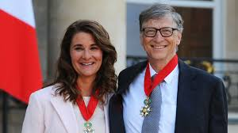

Co-founder of Bill & Melinda Gates Foundation
The following people have influenced Melinda Gates in one way or another:

Melinda's husband, Bill Gates, also known as the creator of microsoft, was a huge influencer in Melinda.
More informationMelinda Gates has once talked to the Malala influencers. Melinda was quite interested in her story.
More informationBill Gates father had an influence on Melinda in a way that changed many lives. He brought up the idea and pursued the idea to create 3 different foundations that helped many people
More informationMelinda Gates, spouse of Bill Gates, has done lots of things to help communities. Not only has she helped to create 3 organizations to help people such as William H. Gates foundation, the Gates Library Foundation and the Gates Learning Foundation. All of which help people with eduction poverty, and other various issues. Melinda is also a womans rights advocate. Gates Learning Foundation More information on Melinda Melinda's advocacy